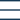

<!--Navigation Bar-->
<header class="header__container" [ngStyle]="{'background': colorLogo === 'white_logo' ? '#133854' : 'white' }">
  <nav class="margin-container nav-menu">
    <div class="nav-menu__header">
      <a routerLink="/" *ngIf="colorLogo ==='blue_logo'"></a>
      <a routerLink="/" *ngIf="colorLogo ==='white_logo'"></a>
    </div>
    <div class="nav-menu__icon_mobile" (click)="openMenuMobile()" >
      
      
    </div>
    
    <div #sc_content_menu class="nav-menu__content" >
      
      <ul class="nav-menu__list">
        <li class="d-flex nav-menu__list_item_li"><a *ngFor="let item of menuItems" (click)="onClickMenu(item.linked)" class="nav-menu__list_item item__typeText" [ngClass]="{'item_active': item.active}">{{item.name}}</a></li>
        <a (click)="openDialog()" class="item__typeCta">{{getCtaInfo().value}}</a>
      </ul>
    </div>
  </nav>
</header>
<router-outlet></router-outlet>
<!--Footer-->
<app-footer></app-footer>